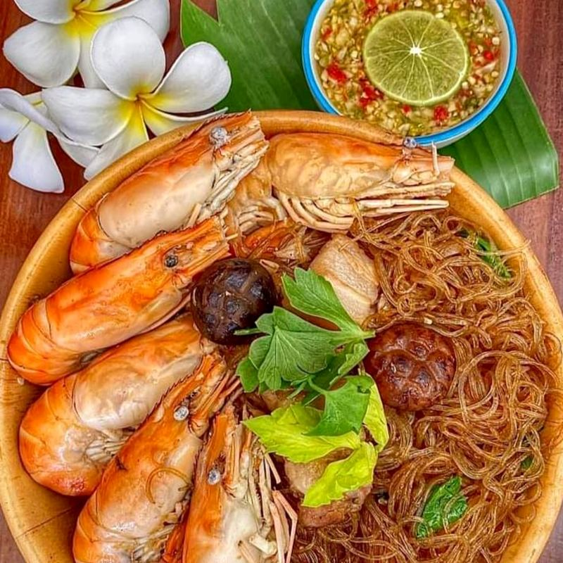
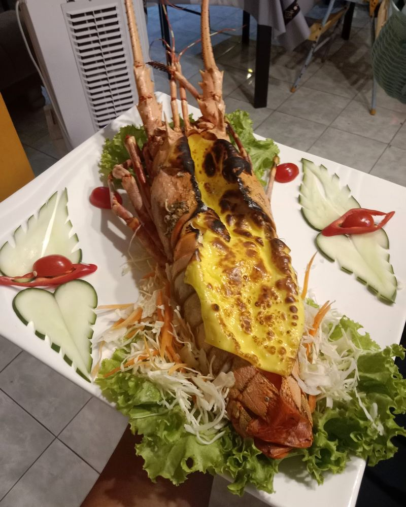
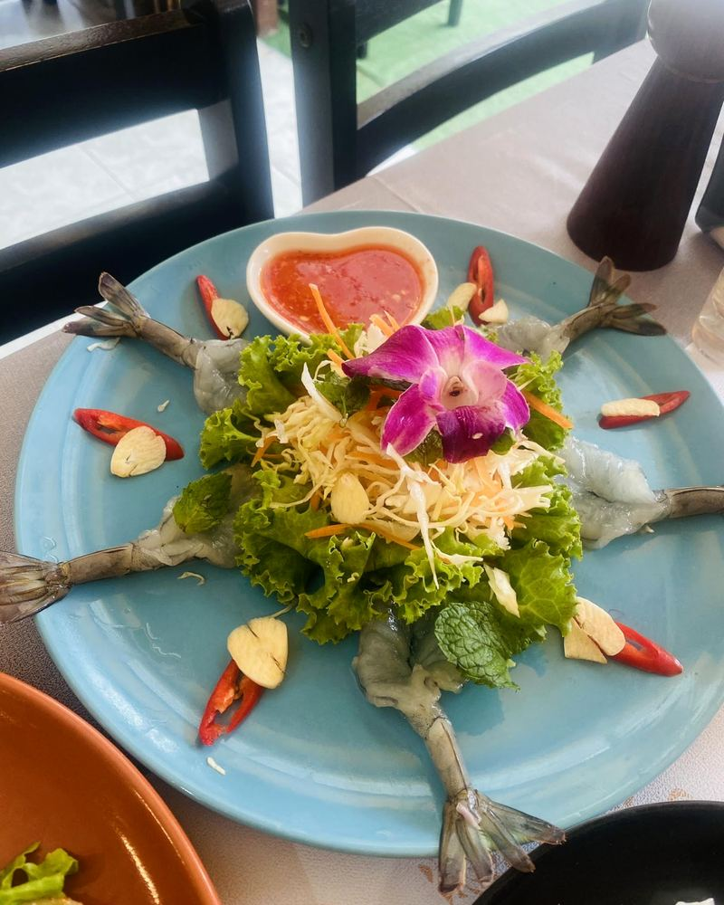
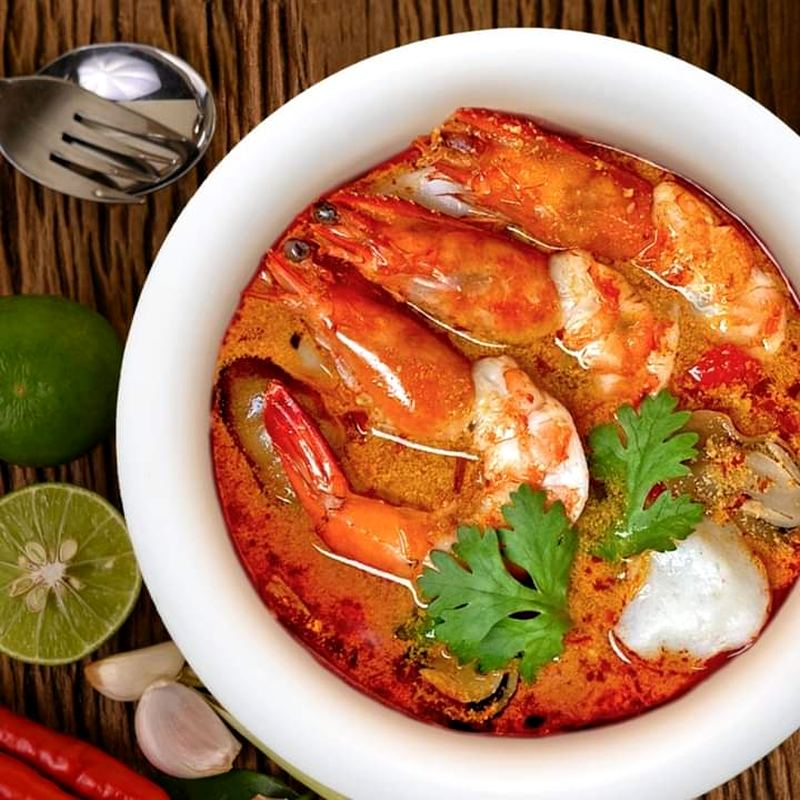
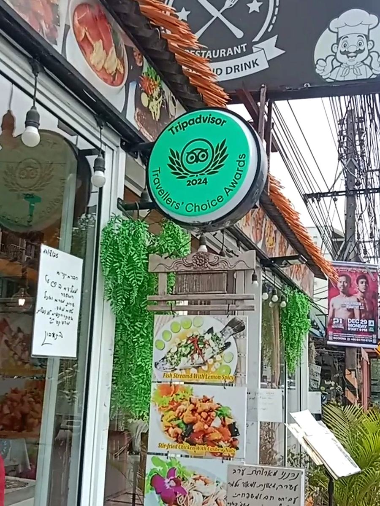

Tripadvisor Travellers' Choice 2024
4.7 on Google from 627 reviews, November 2026
Carved vegetables, orchids and a little sauce on the side. Photos from our own kitchen.





100/2 Bo Put, Koh Samui 84320, in Fisherman's Village. Look for the dark Super Chef sign with the little chef. Free Wi-Fi, bar, cocktails and happy hour.
Every day, 10:00 to 22:00. Reservations welcome.